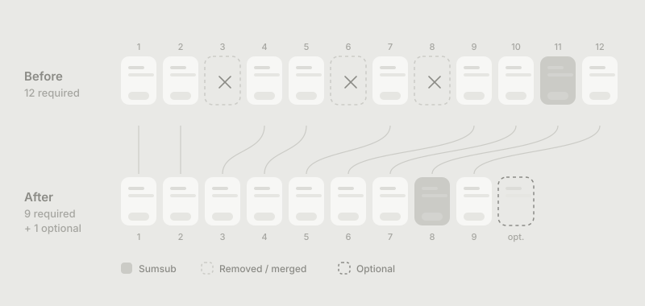
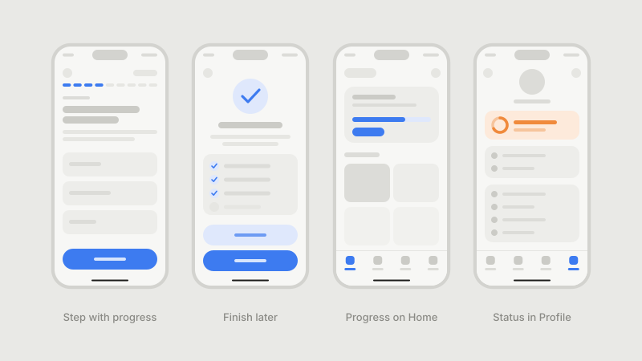

KYC & onboarding NDA
Redesign of identity verification in a fintech app for the European market. Fewer steps, plain language, and a product people can start using before verification is done.
Problem
Before people could do anything in the product, they had to pass 12 KYC steps. The questions were written in legal language, the flow had no navigation, and there was no way to stop and come back later.
The heaviest moment was document and selfie verification: about 60% of the people who reached it dropped off there. Many of those who stayed wrote to support, asking what a question meant or why it was needed.
Research
I went through the KYC flows of our direct competitors in the market and of large international fintech players. For each one I looked at four things: how many steps and in what order, what is asked upfront and what can wait, how the questions are worded, and what happens if you leave halfway.
The pattern was clear. The strongest flows ask only what regulation requires right now, explain every question in one plain sentence, and let you into the product before verification is done.
Fewer steps
I merged related steps and removed three that didn’t need to be separate, which left 9 required steps. I also added one optional step: a short question that gives marketing data we didn’t have before.

Plain language
Every question was rewritten together with our copywriter and then approved by compliance. The new wording had to be simple for users and still legally correct. Each step now says what we ask and why, in one sentence.
Verify later
The biggest change wasn’t in the form itself but in the onboarding model. KYC no longer blocks the product. People can start using it with some limits, and finish verification when they’re ready.
The flow got navigation and a progress bar, and can be paused at any step. Progress is visible on Home and in Profile, so getting back takes one tap. Push notifications and calls from the support team remind people who postponed it.

Working around Sumsub
Document and selfie checks ran on Sumsub, and its interface was out of our hands. So I worked on everything around it. With fewer steps before it, people arrive at verification less tired. And if they don’t have their documents at hand, they can postpone instead of quitting.
Results
Takeaway
Shortening the form helped, but letting people in before verification helped more. When a step is required by regulation and can’t be simplified, you can still change when and how people get to it.